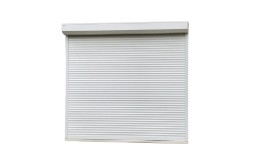
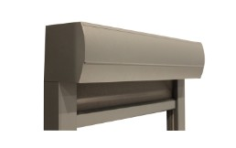
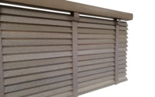
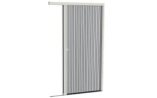
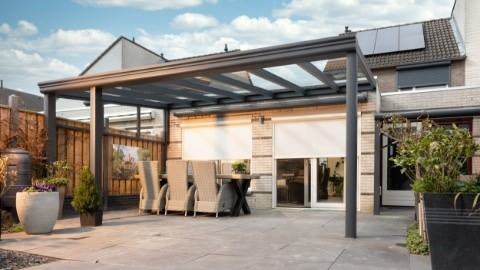
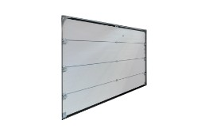

Rolluiken
Geld besparen op (én met) uw zonwering
Hoge energierekeningen, benzineprijzen die blijven stijgen en ook de boodschappen die steeds maar duurder worden. Ontdek hoe zonwering u kan helpen besparen.
Professioneel advies, inspiratie en de nieuwste trends op het gebied van zonwering.
Met jarenlange ervaring in de branche en een passie voor stijlvolle en functionele zonwering, delen we graag onze kennis met u. Praktische tips, productinformatie en inspiratie — het staat allemaal hier.
Hoge energierekeningen, benzineprijzen die blijven stijgen en ook de boodschappen die steeds maar duurder worden. Ontdek hoe zonwering u kan helpen besparen.
Het besparen van energie is niet alleen goed voor het milieu, maar ook voor uw energierekening. Door het gebruik van rolluiken kunt u veel energie besparen.

Rolluiken combineren een veilig gevoel en laten het energieverbruik dalen. U kunt uw rolluiken geheel naar eigen wens samenstellen met verschillende omkastingen.

Screens zonwering hangt aan de buitenkant van uw woning en is een goed alternatief voor de duurdere rolluiken. Maar hoe gebruikt u deze het meest effectief?
Screens zijn vlak hangende doeken ter verduistering van ramen. Ze zorgen voor goede zonwering maar behouden ook het zicht naar buiten.

Welke jaloezieën passen in uw interieur? Er is veel keus uit merken, maten, kleuren en materialen. Wij helpen u bij de juiste keuze.

De keuze voor binnenzonwering hangt af van locatie, gewenst privacyniveau, lichtdoorlaatbaarheid, design en bedieningsmogelijkheden.

Zit u graag buiten? Het wisselvallige weer in Nederland blijft een veelvoorkomend probleem. Maar wist u dat er een oplossing is?

Een garagedeur is niet alleen functioneel, het kan ook de algehele uitstraling en veiligheid van de woning beïnvloeden. Belangrijke overwegingen bij het kiezen.
PVC of laminaat? Een vloer moet een echte eye-catcher zijn. Wij informeren u over de voordelen en nadelen van de verschillende vloeren.
Een uitgebreide collectie van PVC vloeren, PVC-HDF vloeren en laminaat vloeren. Elke soort heeft eigen voordelen en nadelen.
Wat te doen in de hitte? Hoe kunt u uw woning zo koel mogelijk houden tijdens warme zomerdagen?
Somfy is een Frans bedrijf dat in 1969 begon met het innoveren van motoren voor zonweringen. Ontdek de verschillen tussen RTS en IO.
Op 21 maart is het Global Shading Day om klanten en beleidsmakers te informeren over de voordelen van zonwering.
Het selecteren van de juiste zonwering kan een uitdagende taak zijn. Met de juiste tips maakt u de beste keuze.
Februari is de beste maand om uw bestelling te plaatsen. Profiteer van kortere levertijden en vroege aanbiedingen.
De overgang van warme naar koudere maanden is een perfect moment om het binnenklimaat aan te passen met de juiste zonwering.
Plan een showroom afspraak en krijg persoonlijk advies van een van onze specialisten.
Maak een Afspraak